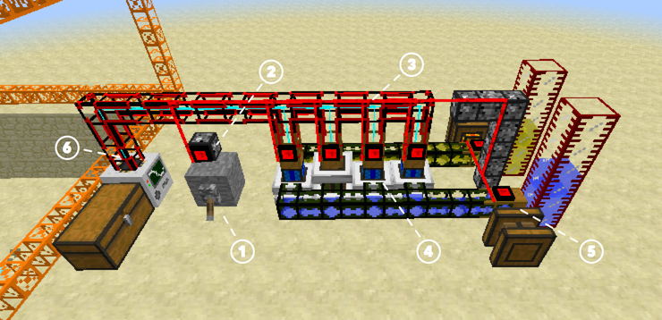

Gates, Wires, and Chips
from Buildcraft
What do gates do?
BuildCraft gates are devices which can be attached to a pipe to detect and interact with objects nearby. Gates can read a wide variety of conditions: that a nearby chest is full, or that a Combustion Engine is about to overheat. In reaction to these conditions, gates can emit various kinds of signals (including redstone signals) to control other gates and/or machines.
An Example: Controlling Engines
Before diving into all the details, let's look at a realistic example of what you might do with gates. This is a small power plant driving a quarry.

Here are the important pieces of the build:
- The on/off switch for the entire operation. Flipping the switch creates a redstone signal.
- A Basic Gate attached to a Structure Pipe reads the redstone signal and generates a red pipe wire signal.
- Red Pipe Wire follows the Cobblestone Kinesis Pipe, transmitting the signal throughout the rest of the build.
- Another Basic Gate receives the red pipe wire signal and converts it back to a redstone signal, thus turning the Combustion Engines on.
- The red pipe wire signal is also received by Basic Gates next to the Redstone Engines, turning them on as well, and causing both fuel and water to flow into the engines.
- Finally, the power generated by the Combusion Engines flows into the Quarry.
Video
Buildcraft Gates Tutorial, Part 1
About
Crafting Guide gives step-by-step tutorials for making anything in Minecraft or its many mods. Just say what you'd like to make, what you already have, it will do the rest, giving you a list of raw materials you need to collect and step-by-step instructions of how much to make of which items in the proper order. You can even ask it to include the materials and instructions for all the tools you'll need along the way!
Donate
Crafting Guide is free for all, but if you find it helpful, donations in any amount are gratefully accepted.
Get Involved
Crafting Guide is completely open-source, and you can help! Whether you want to write a recipe book (all simple JSON), or implement new features, just head over to GitHub to get started.